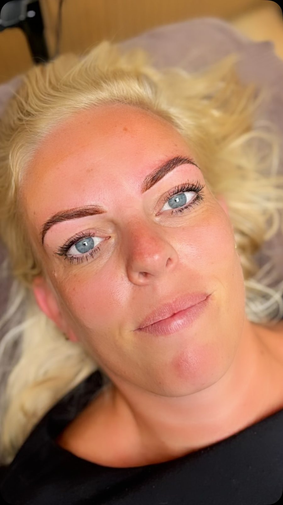
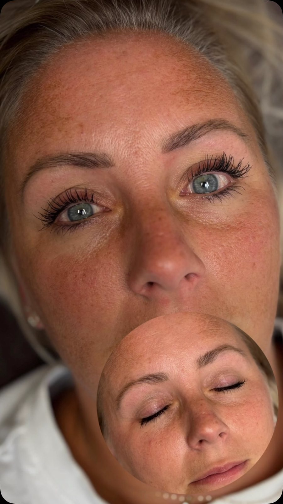
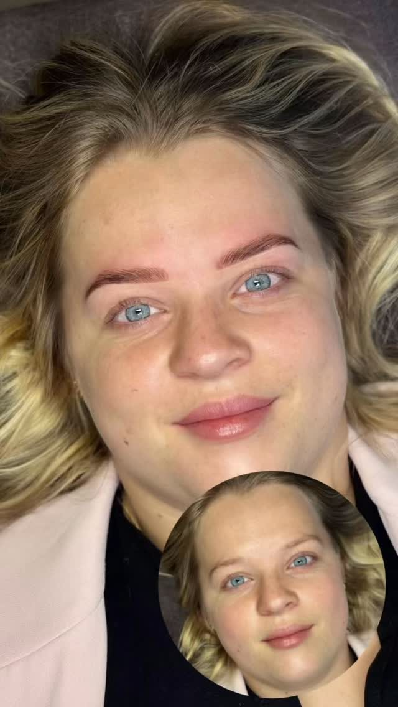
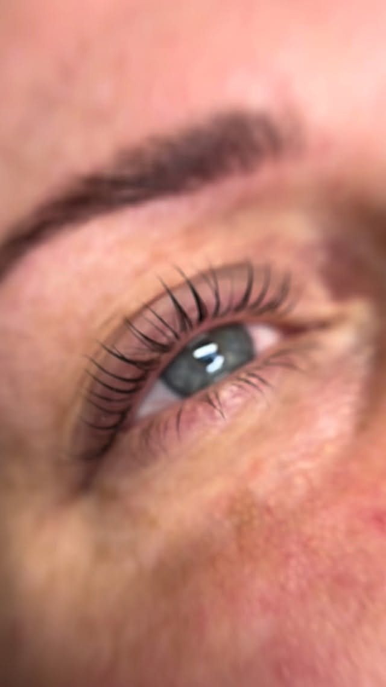
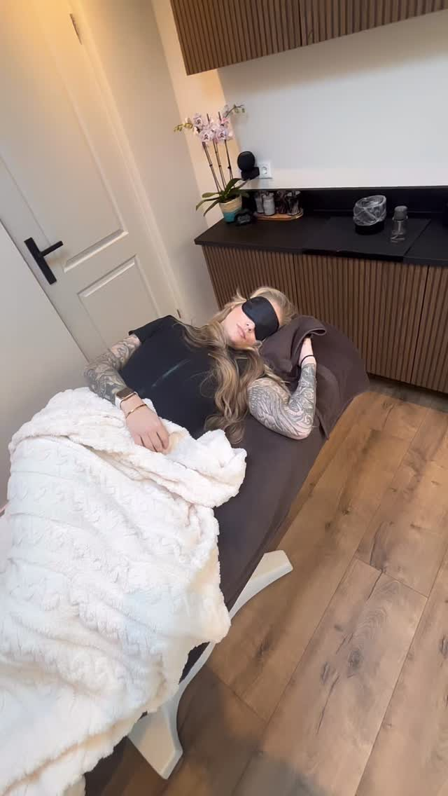

Wenkbrauwen
Powderbrows
Een zachte, poederige vulling die de wenkbrauw voller en verzorgder maakt zonder dat je ziet dat er iets gedaan is. Voor wie klaar is met elke ochtend tekenen.
€ 295intake plus nabehandeling · 120 min
Permanente make-up · Almere
Kimberley Klijn zet powderbrows, hairstroke brows, infralash en eyeliner. Doordeweeks staat ze op de intensive care van het VUMC. Steriel werken is hier niet iets wat erbij komt.

Permanente make-up
Bij elke PMU-behandeling zit de nabehandeling binnen zes weken in de prijs. Dat is geen extra afspraak die je later nog moet boeken; het is onderdeel van het resultaat.
Wenkbrauwen
Een zachte, poederige vulling die de wenkbrauw voller en verzorgder maakt zonder dat je ziet dat er iets gedaan is. Voor wie klaar is met elke ochtend tekenen.
€ 295intake plus nabehandeling · 120 min
Wenkbrauwen
Haartje voor haartje getekend in de richting van je eigen groei. De keuze als je wenkbrauw plekken mist en je wilt dat niemand kan zien waar.
€ 295intake plus nabehandeling · 120 min
Ogen
Een dun lijntje tussen de aanzet van de wimperhaartjes. Je wimpers lijken voller en je ogen groter, en niemand ziet dat er iets zit.
€ 180boven of onder · 55 tot 65 min
Ogen
Wakker worden met eyeliner die al zit. Vooraf gaat er een verdovende crème op het ooglid, zodat je er minder van voelt.
€ 250boven of onder · 90 min
Waarom hier
Haar werk
Vers gezet ziet permanente make-up altijd donkerder en scherper uit dan het eindresultaat. Na het genezen zakt de kleur ongeveer een derde terug. Daarom staan ze hier naast elkaar.



Wat klanten schrijven
Alle stappen worden uitgelegd zodat je niet schrikt.
Ilse
Kim is professioneel, perfectionistisch, denkt met je mee en stelt je volledig op je gemak.
Stéphanie
Ze weet precies wat ze doet en luistert goed naar je wensen.
Maya · over powderbrows
Overgenomen uit haar eigen beoordelingen.

De studio
Geen wachtruimte vol mensen en geen tweede klant naast je. Er is per afspraak één behandeling, met een deken erover en een masker op als je dat wilt.
De tijden wisselen per week, want Kimberley combineert de studio met haar diensten in het ziekenhuis. Daarom loopt het boeken hier via een aanvraag: je geeft door wat je wilt en wanneer het jou schikt, en zij bevestigt.
Een intake is er om te kijken of het bij je past, niet om je iets aan te praten. Je kunt ook eerst een foto sturen via WhatsApp.